指定自立支援医療機関（育成医療・更生医療） 顎口腔機能診断医療機関

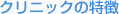
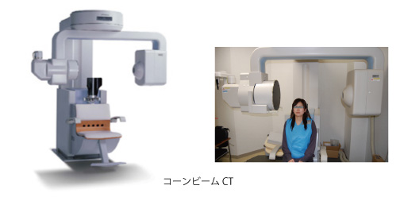
歯科医院での検査といえば、歯の型を取ったり、レントゲン写真の撮影するなどの検査を思い浮かべるでしょう。しかし、CT（コンピュータ断層撮影）や、MRI（磁気共鳴映像撮影）と呼ばれる検査を行うこともあるのです。
ユニ矯正歯科クリニックでは、2003年に歯顎顔面用コーンビームX線CT装置（コーンビームCT）を道内２番目、矯正歯科では最初に導入し、本格的な三次元画像診断を開始しました。歯科用CTは、コーンビームCTと呼ばれるタイプですが、X線の被爆量が少なく、より細かい形まで高精度な画像を得ることができます。当院では、主にあごの骨の三次元分析や、顎関節の分析、親しらずや埋伏歯（骨の中に歯が埋まって出てこない状態の歯）の位置確認、耳鼻疾患の確認などに利用しています。また、院内での利用のほか、口腔（こうくう）外科や耳鼻科などの医師とのコミュニケーションツールとしても活用しています。
三次元画像解析ソフトの発達も著しく、最近では、顎変形症（あごの骨の形の異常による不正咬合）の患者さんの顎変形手術前の顔の情報から、手術した後の顔を予想して、手術の前に自分がどの様な顔になるのかを知ることもできるようになりました。歯科用CTの登場によって、今までのレントゲンの影絵のような平面的な画像から知識と経験を駆使して形を想像するだけはなく、必要に応じて、骨や歯の形そのものの立体的な形を調べることができるようになりました。そのため、歯科医療技術のパラダイムシフトの一翼を担っています。
MRIは、主に歯科領域では顎関節症（口が開きにくくなる、開けると痛みが生じる、関節の音がなるなど）の状態を調べるために撮影することがあります。当院では、MRI（核磁気共鳴画像法）の多くは、JR札幌病院に撮影依頼を行っています。顎関節を構成している関節円板という軟骨はこのMRIにしか写りません。その状態と、その周辺の骨などとの関係を見ます。それに加えて、当院所有のコーンビームCTで得られた、詳細な顎関節の骨の情報により、総合的に診断をすることができます。
当院でのCTを利用した三次元画像解析の一例を以下にお見せいたします
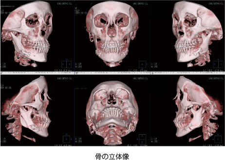
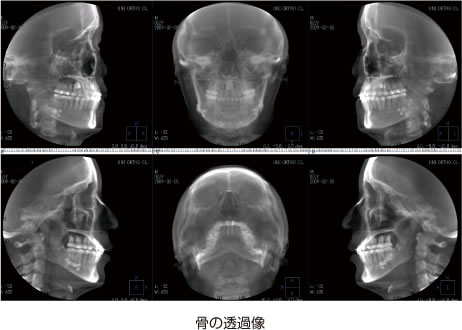
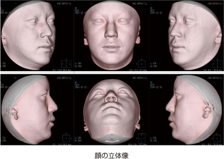
骨の立体像・透過像、顔面（軟組織）の立体像など、多彩な三次元画像処理が可能です。これらすべては任意の角度から瞬時にして画像処理が可能です。
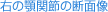
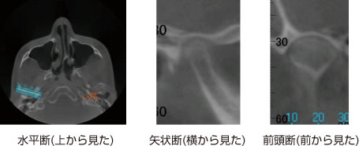
顎関節の水平断より、顎関節の長軸を設定します。それにそって、垂直に矢状断を、平行に前頭断の断面図を、というように、任意の画像を見ることができます。
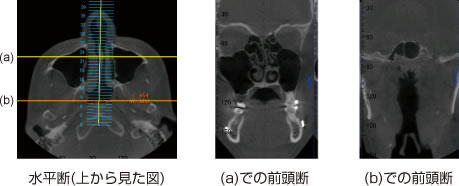
鼻領域を（a）黄色と（b）オレンジ色での前頭断（前から見た）を表示しました。（a）より、上顎洞や篩骨洞などの副鼻腔および鼻中隔と下鼻甲介は正常です。（b）より、口蓋扁桃に異常はなく、気道が確保されています。
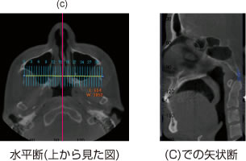
耳鼻領域を（c）赤色で、正中の矢状断を表示しました。（c）より、扁桃（アデノイド）に異常はなく、また、蝶形骨洞、前頭洞なども正常です。
このように、当院では、主に以下の4つのチェックを行っています
- 1） 鼻中隔の弯曲のチェック
- 2） アレルギー性鼻炎などによる下鼻甲介の肥厚のチェック
- 3） 副鼻腔に関するチェック
1. 上顎洞 2. 篩骨洞 3. 前頭洞 4. 蝶形骨洞 - 4） 扁桃のチェック
1. 咽頭扁桃（アデノイド） 2. 口蓋扁桃
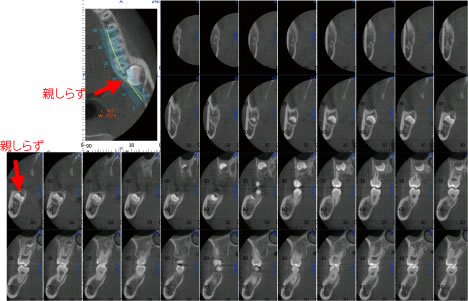
埋伏している下の親しらずを歯列に沿って垂直の断面画像上で、状態および位置の確認を行う
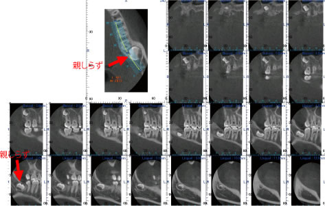
埋伏している下の親しらずを歯列に沿った断面画像上で、状態および位置の確認を行う
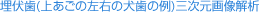
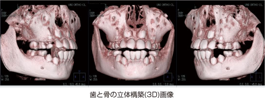
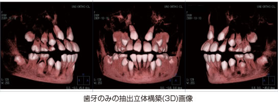
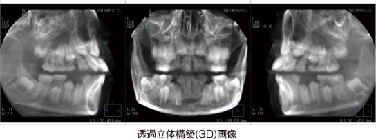
埋伏している歯は、三次元的な位置関係を把握することが非常に重要です。当院では、口腔外科とのチームアプローチにより、開窓牽引（埋まっている歯を引っ張り出すこと）を行っています。従来の2次元（平面）のレントゲンでは、このような三次元的で詳細な情報を得ることはできません。
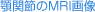
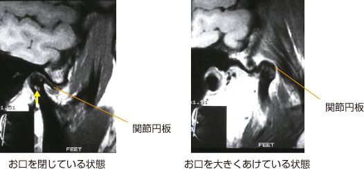
関節に空洞（上下の写真：黄色矢印）があることがわかります。また、関節円板（上の写真：オレンジ線）は、前方に転位していますが、大きく口を開けたときには関節頭に乗っています。
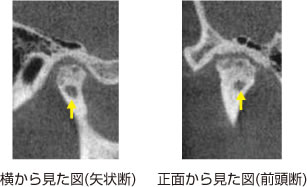
当院で撮影した同一患者さんの顎関節のCT画像です。